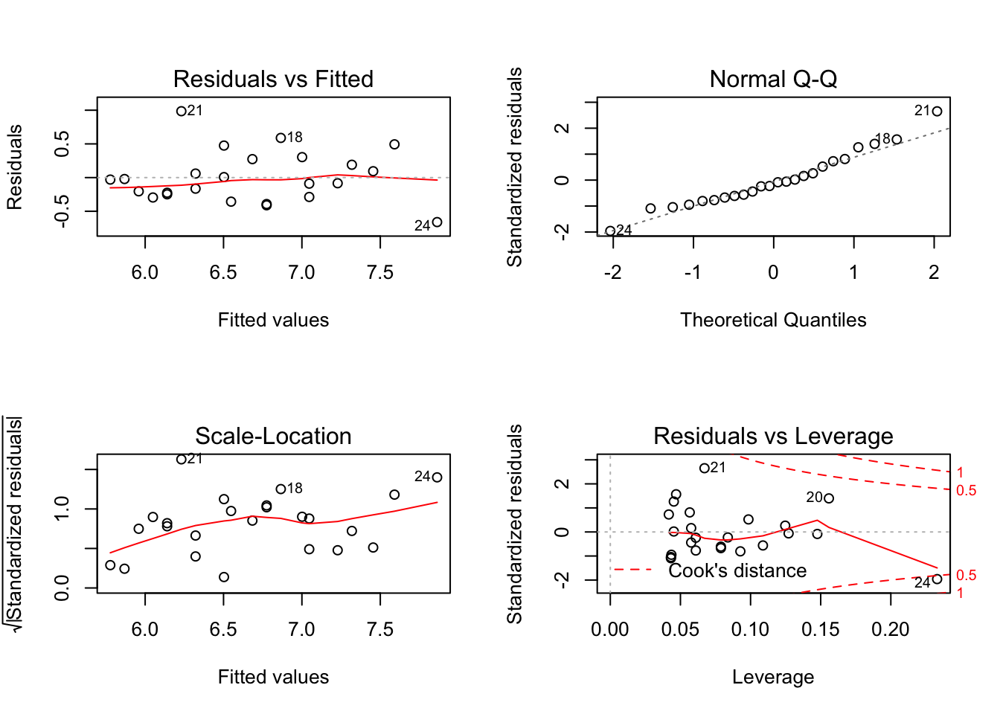
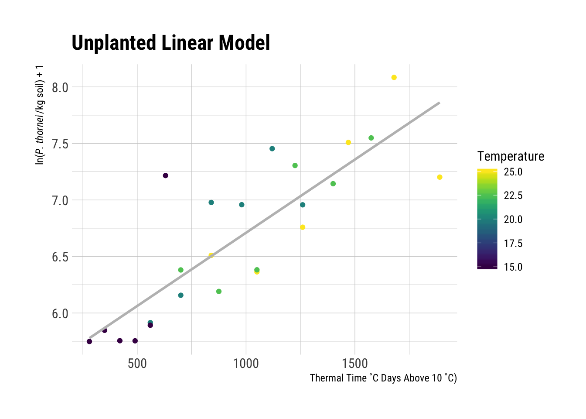
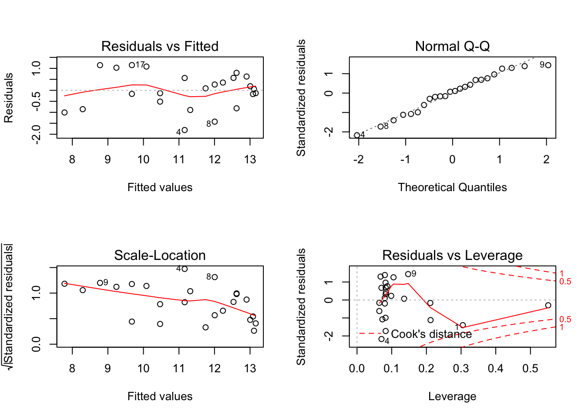
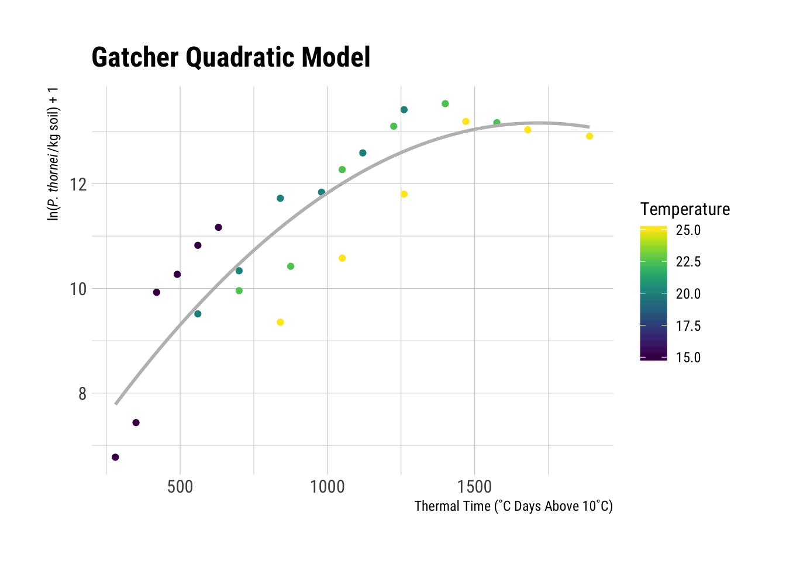
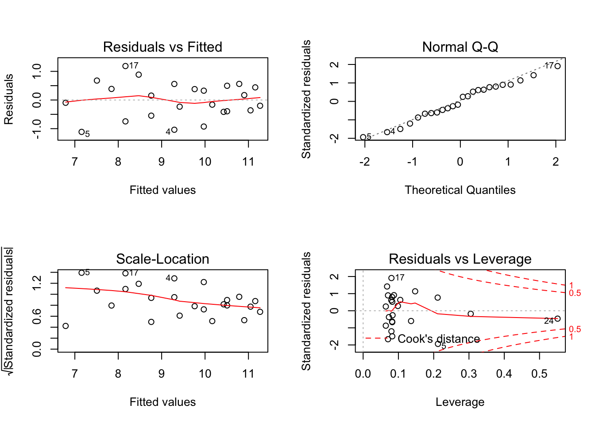
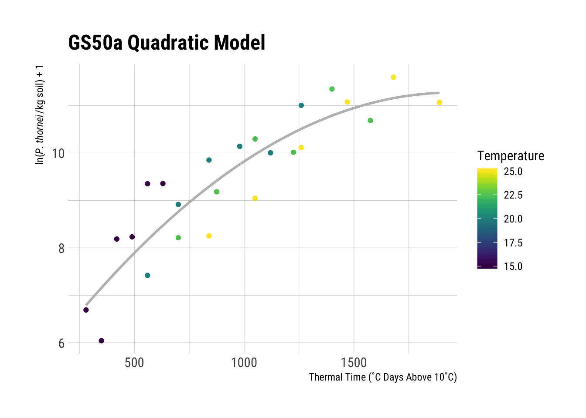

The paper uses a linear model for the unplanted control. Here we will write a function to use in modelling the unplanted population data. I have wrapped the model in a function which makes it pipe-able, %>% and has other advantages when it comes to fitting the same model to several sets of data.
In the linear equation for the Unplanted control treatment, the rate of population increase can be expressed as:
\[y = y_0 + rt\]
Where \(y_0\) is the initial population, \(r\) is the rate of change and \(t\) equal time.
linear_model <- function(df) {
lm(
Log_pop ~ Degree_days,
data = df
)
}Now check the model fit, using filter() from dplyr to select only Unplanted data from the data set for the model and fit the linear model to the data.
unplanted_model <- nema_long %>%
filter(Variety == "Unplanted") %>%
linear_model()Using par(mfrow = c(2, 2)) creates a four-panel graph rather than four individual graphs, which the next function will create by default.
Using the plot() function with any lm() object will create four diagnostic plots for your inspection.
par(mfrow = c(2, 2))
plot(unplanted_model)
These plots do not appear to indicate anything amiss as one would hope for from the models that have already been published. If you are unfamiliar with how to interpret these diagnostic plots see [Interpreting Linear Models in R] in the [Further Reading] section.
Using the summary() function displays information about the model fit. If you are unfamiliar with how to read and interpret the output of summary() for a linear model, please refer to [Interpreting Linear Models in R] in the [Further Reading] section for references that go into more detail on this matter.
summary(unplanted_model)##
## Call:
## lm(formula = Log_pop ~ Degree_days, data = df)
##
## Residuals:
## Min 1Q Median 3Q Max
## -0.66053 -0.25811 -0.05683 0.21123 0.98511
##
## Coefficients:
## Estimate Std. Error t value Pr(>|t|)
## (Intercept) 5.4150643 0.1929731 28.061 < 2e-16 ***
## Degree_days 0.0012950 0.0001823 7.103 4.01e-07 ***
## ---
## Signif. codes: 0 '***' 0.001 '**' 0.01 '*' 0.05 '.' 0.1 ' ' 1
##
## Residual standard error: 0.3847 on 22 degrees of freedom
## Multiple R-squared: 0.6964, Adjusted R-squared: 0.6826
## F-statistic: 50.45 on 1 and 22 DF, p-value: 4.006e-07From the original paper, the \(R^2\) value of the unplanted linear model was 0.7, we can see here that agrees: 0.7. In the original paper, \(P\) < 0.001, R reports \(p-value:\) 4.006382710^{-7}, which also agrees.
Using ggplot2’s geom_smooth() we can fit the same model above and graph the resulting line.
nema_long %>%
group_by(Variety) %>%
filter(Variety == "Unplanted") %>%
ggplot(aes(
x = Degree_days,
y = Log_pop,
colour = Temperature
)) +
geom_point() +
geom_smooth(
method = "lm",
formula = y ~ x,
size = 1,
se = FALSE,
colour = "grey",
alpha = 0.5
) +
ylab(expression(
paste(
"ln(",
italic("P. thornei"),
"/kg soil) + 1"
),
sep = ""
)) +
xlab("Thermal Time ˚C Days Above 10 ˚C)") +
scale_colour_viridis("Temperature") +
ggtitle("Unplanted Linear Model")
In the original paper, the quadratic model best described Gatcher and GS50a data, which are fit here.
quadratic_model <- function(df) {
lm(
Log_pop ~ Degree_days + I(Degree_days ^ 2),
data = df
)
}Gatcher, Potam and Suneca all have very similar curves, here Gatcher is used to fit a second-order model as in the original paper following the same methods as above for the linear model.
s_model <- nema_long %>%
filter(Variety == "Gatcher") %>%
quadratic_model()
par(mfrow = c(2, 2))
plot(s_model)
summary(s_model)##
## Call:
## lm(formula = Log_pop ~ Degree_days + I(Degree_days^2), data = df)
##
## Residuals:
## Min 1Q Median 3Q Max
## -1.80668 -0.58936 0.07297 0.58228 1.14866
##
## Coefficients:
## Estimate Std. Error t value Pr(>|t|)
## (Intercept) 5.476e+00 9.043e-01 6.055 5.21e-06 ***
## Degree_days 8.961e-03 1.909e-03 4.693 0.000124 ***
## I(Degree_days^2) -2.612e-06 9.008e-07 -2.899 0.008579 **
## ---
## Signif. codes: 0 '***' 0.001 '**' 0.01 '*' 0.05 '.' 0.1 ' ' 1
##
## Residual standard error: 0.8631 on 21 degrees of freedom
## Multiple R-squared: 0.7998, Adjusted R-squared: 0.7808
## F-statistic: 41.96 on 2 and 21 DF, p-value: 4.621e-08From the original paper, the \(R^2\) value of Gatcher’s quadratic model was 0.80, we can see here that agrees: 0.8. In the original paper, \(P\) < 0.001, R reports \(p-value:\) 1.240363510^{-4}, which also agrees.
The model visualisation is the same for the quadratic models as the linear model, however you will note that the line has a downward curve at higher temperatures.
nema_long %>%
group_by(Variety) %>%
filter(Variety == "Gatcher") %>%
ggplot(aes(
x = Degree_days,
y = Log_pop,
colour = Temperature,
)) +
geom_point() +
geom_smooth(
method = "lm",
formula = y ~ x + I(x ^ 2),
size = 1,
se = FALSE,
colour = "grey",
alpha = 0.5
) +
ylab(expression(
paste(
"ln(",
italic("P. thornei"),
"/kg soil) + 1"
),
sep = ""
)) +
xlab("Thermal Time (˚C Days Above 10˚C)") +
scale_colour_viridis("Temperature") +
ggtitle("Gatcher Quadratic Model")
GS50a, moderately resistant to P. thornei, also fits a quadratic model but the coefficients are slightly different due to different responses to the variety and temperature.
mr_model <- nema_long %>%
filter(Variety == "GS50a") %>%
quadratic_model()
par(mfrow = c(2, 2))
plot(mr_model)
summary(mr_model)##
## Call:
## lm(formula = Log_pop ~ Degree_days + I(Degree_days^2), data = df)
##
## Residuals:
## Min 1Q Median 3Q Max
## -1.11285 -0.39845 0.02889 0.45494 1.18598
##
## Coefficients:
## Estimate Std. Error t value Pr(>|t|)
## (Intercept) 5.157e+00 6.779e-01 7.607 1.83e-07 ***
## Degree_days 6.274e-03 1.431e-03 4.384 0.00026 ***
## I(Degree_days^2) -1.609e-06 6.753e-07 -2.383 0.02672 *
## ---
## Signif. codes: 0 '***' 0.001 '**' 0.01 '*' 0.05 '.' 0.1 ' ' 1
##
## Residual standard error: 0.647 on 21 degrees of freedom
## Multiple R-squared: 0.8233, Adjusted R-squared: 0.8065
## F-statistic: 48.92 on 2 and 21 DF, p-value: 1.248e-08From the original paper, the \(R^2\) value of GS50a’s quadratic model was 0.82, we can see here that agrees: 0.82. In the original paper, \(P\) < 0.001, R reports \(p-value:\) 2.596147310^{-4}, which also agrees.
nema_long %>%
group_by(Variety) %>%
filter(Variety == "GS50a") %>%
ggplot(aes(
x = Degree_days,
y = Log_pop,
colour = Temperature,
)) +
geom_point() +
geom_smooth(
method = "lm",
formula = y ~ x + I(x ^ 2),
size = 1,
se = FALSE,
colour = "grey",
alpha = 0.5
) +
ylab(expression(
paste(
"ln(",
italic("P. thornei"),
"/kg soil) + 1"
),
sep = ""
)) +
xlab("Thermal Time (˚C Days Above 10˚C)") +
scale_colour_viridis("Temperature") +
ggtitle("GS50a Quadratic Model")
As in the original paper, the model equations can be derived from these models as well. The derived regression equations are:
Gatcher (Susceptible): \[ln(P. thornei + 1) = -0.000003(0.0000009)T^2 + 0.009(0.0019)T + 5.4671(0.904)\]
GS50a (Moderately Resistant): \[ln(P. thornei + 1) = -0.000002(0.0000007)T^2 + 0.0063(0.0014)T + 5.1559(0.678)\]
Unplanted Control: \[ln(P. thornei + 1) = 0.0013(0.00018)T + 5.4151(0.193)\]
Refer back to the summary() outputs for each of the models for the coefficient values and \(R^2\) values, which match those reported in the original paper where the models were fit with Genstat.
Gatcher and GS50a have similar phenologies, but differ in resistance to root lesion nematodes, making the model comparisons a reasonable objective. The original paper goes on to test the effect of sowing date based on degree days. (Thompson 2015) reported a 61% increase in yield on average from sowing the susceptible, intolerant cultivar Gatcher at the end of May than sowing it in the third week of June. By June the soil temperatures and nematode populations were both greater, leading to lower wheat yield. The effects were less pronounced in the moderately resistant cultivar, GS50a, but were similar with a reduction in nematode population densities occurring due to earlier planting.
The models illustrated here for Gatcher and GS50a were able to accurately reflect the changes in nematode population as a result of degree days, which affected the nematodes’ ability to damage the crop and reduce yield (Thompson 2015).
Thompson, J.P. 2015. “Modelling Population Densities of Root-Lesion Nematode (Pratylenchus Thornei) from Soil Profile Temperatures to Choose an Optimum Sowing Date for Wheat in a Subtropical Region.” Field Crops Research 183:50–55. https://doi.org/10.1016/j.fcr.2015.07.005.